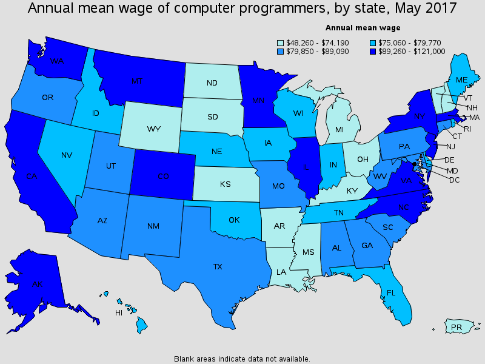

What type of salary to expect
Average Base Salary for different coding and programming jobs.
Rememberthis is the average starting salary this does not include
youroporttunities for growth and increase but you will more about
that on the career page
| Job type | Average Base Salary | Area |
| Software Application Devoloper | $91,901 | Chicago IL |
| Software Application Developer | $72,538 | Saint Louis, MO |
| Web Developer | $82,094 | Saint Louis, MO |
| Web Developer | $82,382 | Chicago, IL |
| Computer Systems Engineer | $107,332 | Chicago, IL |
| Computer Systems Engineer | $90,707 | Saint Louis, MO |
| Computer Sytems Analyst | $71,799 | Saint Louis, MO |
| Computer Sytems Analyst | $79,910 | Chicago, IL |
| Computer Programmer | $63,952 | Chicago, IL |
| Computer Programmer | $61,652 | Saint Louis, MO |
